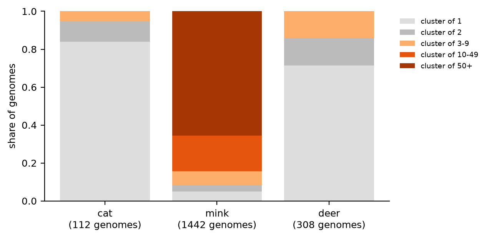
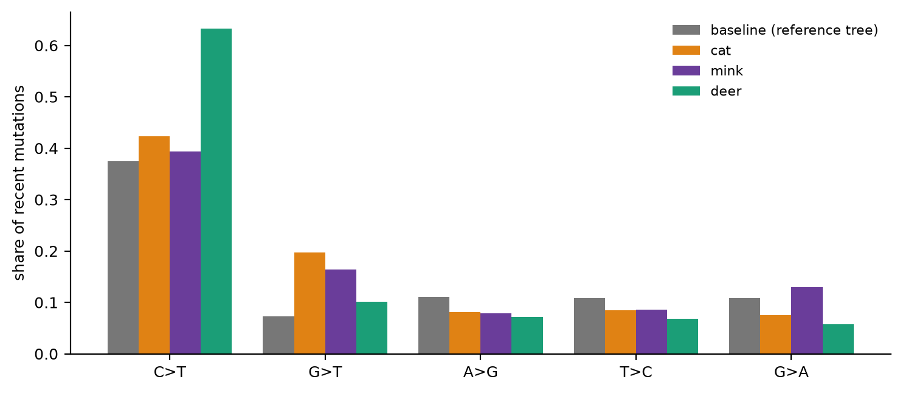
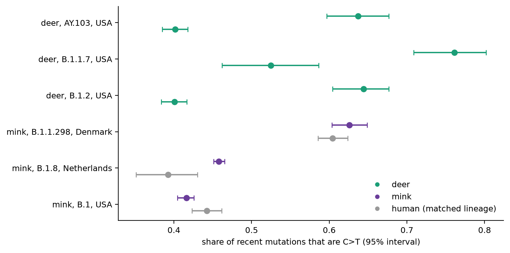

零基礎入門指南
這個病毒在動物身上做了什麼、怎樣用基因組判斷宿主之間的差異、以及這個項目到底量度了什麼 —— 不預設任何病毒學背景。
在任何基因組分析說得通之前,先知道 SARS-CoV-2 是什麼,以及它在動物身上做了什麼。
SARS-CoV-2(嚴重急性呼吸系統綜合症冠狀病毒 2 型)是 2019 年底在中國武漢被發現的冠狀病毒,引發 COVID-19 疫情。它屬於 Coronavirus(冠狀病毒)家族,跟 SARS(2003 年)、MERS(2012 年)是遠親。
它的天然宿主被認為是蝙蝠,很可能經由一種中間宿主傳入人類,細節至今仍有爭議。但跟 RSV 和 mpox 不同,SARS-CoV-2 在疫情爆發之後,又從人類傳回好幾種動物 —— 這正是本項目要用的機會:同一個病毒,在不同動物身上,看它的基因組有沒有留下不同的痕跡。
跟 RSV(RNA,約 15,000 字母,10 個基因)和 mpox(DNA,約 197,000 字母,180 個基因)相比,SARS-CoV-2 是第三種規模:
| RSV | Mpox | SARS-CoV-2 | |
|---|---|---|---|
| 遺傳物質 | 單股 RNA | 雙股 DNA | 單股 RNA |
| 基因組大小 | 約 15,000 | 約 197,000 | 約 29,800 |
| 基因數目 | 10 | 約 180 | 約 11 |
| GC 含量 | 約 33–38% | 約 33% | 約 38% |
| CpG O/E | 多數基因 0.2–0.4 | 約 1.04(沒被壓抑) | 約 0.41(強烈壓抑) |
跟 RSV 一樣,SARS-CoV-2 的 CpG(第 15 節,RSV 教材)被明顯壓抑,所以這個項目同樣可以問「CpG、GC 成分有沒有跟宿主一起變」。但結果會顯示:答案是沒有(第 14 節)。
SARS-CoV-2 的譜系用 Pango nomenclature(Pango 命名法),標籤同樣分層,但跟 RSV 的字母數字(A.D.1.5)不同,常見的是英文字母開頭,例如 B.1、B.1.1.7(Alpha 變異株的其中一個標籤)、AY.103(Delta 變異株的一個分支)。數字越多代表分支越細。
這個項目用到的六個譜系,全部是 2020–2022 年、Alpha 或 Delta 爆發期間的常見譜系,不是 2022 年後的 Omicron 類譜系。
人類把 SARS-CoV-2 傳給了很多種動物,這個項目選了三種,目的是形成一個傳播強度的「光譜」:
| 宿主 | 基因組數 | 預期角色 | 為什麼 |
|---|---|---|---|
| 貓(Felis catus) | 112 | 死胡同式跨物種傳入 | 家貓由主人傳染,據了解不太會貓傳貓。 |
| 水貂(Neovison vison / Neogale vison) | 1,442 | 被撲殺結束的爆發 | 2020 年起多國的水貂養殖場爆發疫情,之後場場被撲殺,留下很多株「短命但激烈」的爆發。 |
| 白尾鹿(Odocoileus virginianus) | 308 | 可能持續循環 | 野生動物,沒有被撲殺;美國的監測報告過鹿傳鹿的情況。 |
值得知道:水貂有兩個學名
水貂在 GISAID 底下用了兩個不同的拉丁學名:Neovison vison(較舊,1,219 條)和 Neogale vison(較新的分類修訂,223 條)。兩者是同一種動物,所以本項目把它們合併成同一個「mink(水貂)」組別。這 223 條全部來自美國俄亥俄州立大學的同一組研究,全部是 2022 年、同一個譜系(AY.39)—— 等於一次單一事件,不是獨立的多個樣本。
Mpox 的突破(見 mpox 教材)是找到「孤立基因組 對 在傳播鏈裡的基因組」APOBEC3 佔比有分別,但宿主本身沒有對比 —— 幾乎全部基因組都是人類。導師的關鍵詞「宿主、傳播、零星、持續」裡,「宿主」這一項 mpox 給不了。SARS-CoV-2 正好補上:同一個病毒,三種動物,傳播強度完全不同。
值得知道:這次把 mpox 的教訓用上了
Mpox 項目學到最重要的一課是:成分(GC、CpG)量不到差異,突變譜才量得到。所以 SARS-CoV-2 這一輪從一開始就把重點放在突變譜,而不是重複量 GC 含量(雖然還是量了一次,用來確認同一個結論,見第 14 節)。
大部分概念(GC content、CpG O/E、突變譜、APOBEC3、近期突變)已經在 RSV 和 mpox 教材講過。這裡只補三個新用法。
跟 mpox 一樣(mpox 教材第 10 節),把差異不超過 3 個替換的基因組連成一個「群」(cluster),群的大小和跨度用來判斷像不像持續傳播。這次多加一步:分開在每一種宿主之內做群(貓只跟貓比,水貂只跟水貂比,鹿只跟鹿比),這樣群的大小才反映「這種宿主裡有沒有長鏈傳播」,不會被跨宿主的差異干擾。
跟 mpox 教材第 7–9 節一樣的概念:一條基因組的近期突變(相對於 Nextclade 家族樹上最近節點多出來的替換),看裡面哪一種替換(C→T、G→T 等)佔比特別高。
不同之處是:mpox 用 APOBEC3 類型(C→T 在 T 後面)當指標,因為那是已發表、有明確機制的指紋。SARS-CoV-2 這裡先看單純的 C→T 佔比,不預設機制 —— 因為這次的問題是「鹿跟人類的突變譜有沒有不同」,而不是驗證一個已知機制。
這是本項目最關鍵的新方法。第一輪(第 16 節)只是把每種動物的突變譜,跟 Nextclade 參考樹上全部分支(混合了各種譜系、各種人口)的平均突變譜相比。這個「基線」有一個漏洞:如果鹿剛好採到的是本來就比較偏向 C→T 的譜系,基線比較會錯誤地把「譜系的差異」當成「宿主的差異」。
修正方法:只拿同一個譜系、同一個國家的人類基因組來比。例如鹿的 55 條 AY.103(美國)就只跟人類的 502 條 AY.103(美國、同期)比,不混進其他譜系或國家的人類基因組。這樣,唯一還在變的變量就是「宿主」。
為什麼這一步是必要的
如果只看「鹿 vs 混合基線」就下結論,等於犯了跟 RSV 項目早期一樣的錯誤類型 —— 把「分組方式造成的差異」當成「生物學上的差異」(RSV 教材第 29 節講過同一個陷阱,叫辛普森悖論的親戚)。配對比較是唯一能把這個漏洞堵住的辦法。
RSV 和 mpox 教材已經講過信賴區間、p 值失效、分群重抽樣。這裡補三個這次特別碰到的重點。
這次最重要的教訓:鹿的群幾乎全部是孤立的(308 條裡 220 條沒有任何近親),乍看像是「鹿沒有持續傳播」。但更合理的解讀是:鹿的 308 條基因組橫跨 5 年、33 個不同譜系、遍及美國各地 —— 對一個龐大的野生鹿群來說,這是非常稀疏的抽樣,不是因為鹿群裡真的沒有傳播鏈。相反,水貂的群又大又多,是因為幾個養殖場被密集地定序,不代表水貂「傳播得更廣」,只代表那幾場疫情被看得更仔細。
要小心的地方
這正是為什麼第 15 節(群結構)得不出乾淨的結論,而要另外做第 16–17 節(突變譜)。群的大小只有在抽樣密度相近的時候才能互相比較。貓、水貂、鹿的抽樣密度差很遠,所以群結構這個指標在這份數據裡失效了。
配對比較(第 15 節)裡,GC 含量的差異常常 p < 0.0001 —— 但實際差距只在小數點第四位(例如 0.3787 對 0.3796)。這跟 RSV 教材第 21 節講的一模一樣:樣本數一大,再小的差距都會顯著。所以這個項目一律同時報告「差距有多大」和「p 值」,只看 p 值會被誤導。
這次的突變佔比區間,用的是逐條基因組重抽樣(bootstrap),不是像 mpox 那樣按「群」重抽樣。原因是這裡要比較的本來就是「群結構」失效之後的突變譜,如果再按群重抽樣,水貂某幾個大群會主宰整個區間。逐條基因組重抽樣比較均衡,但代價是:同一條傳播鏈裡的基因組不是真正獨立的,所以這些區間很可能比真正的不確定性要窄。讀的時候,把它當成「最樂觀的區間」,不要當成最終答案。
步驟、結果,以及對哪些部分真的成功了的誠實交代。代碼都在 notebooks/SARS2/。
| 步驟 | 做什麼 | 關鍵數字 | 代碼在哪裡 |
|---|---|---|---|
| 12 收集 | GISAID hCoV-19,動物 3 種 + 配對人類 6 批 | 4,145 條 | scripts/merge_gisaid_augur.py |
| 13 標註 | Nextclade:分支、譜系、替換 | 全部標註 | scripts/build_sars2_features.py |
| 14 成分 | GC、CpG、UpA、TpC O/E,按宿主比較 | 各組 0.379–0.380 | notebooks/SARS2/01 |
| 15 群結構 | 每種宿主之內,按替換差異分群 | 鹿:220/308 孤立 | scripts/run_sars2_hosts.py |
| 16 混合基線突變譜 | 近期突變對 Nextclade 參考樹整體 | 鹿 C→T 0.63 對 0.37 | notebooks/SARS2/01 |
| 17 同譜系配對確認 | 動物對同譜系、同國家人類 | 鹿三個譜系全部偏高 | scripts/run_sars2_human_compare.py、notebooks/SARS2/02 |
從 GISAID hCoV-19 下載,篩選條件全程保持 Complete、High coverage、Collection date complete:
| 配對 | 動物基因組 | 人類基因組 |
|---|---|---|
| 鹿,AY.103,美國 | 55 | 502 |
| 鹿,B.1.1.7,美國 | 45 | 68 |
| 鹿,B.1.2,美國 | 40 | 501 |
| 水貂,B.1.1.298,丹麥 | 320 | 622 |
| 水貂,B.1.8,荷蘭 | 290 | 96 |
| 水貂,B.1,美國 | 215 | 494 |
合計 4,145 條完整基因組,全部有完整採集日期。
GISAID 的篩選已經保證了完整度和覆蓋度,本項目另外量度每條序列的不明確鹼基比例,突變譜的分析只用不超過 1% 的序列,而且「近期突變」不超過 30 個(理由跟 mpox 教材第 9 節一樣:太多的話更可能是定序錯誤)。用 Nextclade 的 nextstrain/sars-cov-2/wuhan-hu-1/orfs 資料庫標註每條序列的分支、譜系,以及相對於參考序列和最近樹節點的全部替換。
延續 RSV、Nipah、mpox 的結果,SARS-CoV-2 在動物宿主之間成分也沒有分別:
| 宿主 | GC 含量 | CpG O/E | UpA O/E | TpC O/E |
|---|---|---|---|---|
| 貓 | 0.3796 | 0.4073 | 0.8292 | 0.8002 |
| 水貂 | 0.3797 | 0.4068 | 0.8292 | 0.8002 |
| 鹿 | 0.3792 | 0.4073 | 0.8300 | 0.7984 |
| 人類 | 0.3797 | 0.4075 | 0.8290 | 0.8001 |
就算在同譜系配對比較裡,p 值常常顯著,但實際差距只在第四位小數(第 10 節)。四種病毒、四個不同的病毒家族,成分這條路線一直都量不到宿主差異。這本身已經是一個穩定的、跨病毒的結論。

表面上看,鹿「沒有傳播鏈」。但如第 9 節解釋,這更可能反映抽樣稀疏:308 條橫跨 5 年、33 個譜系、美國各地,密度遠低於水貂(集中在幾個養殖場的密集定序)。群結構在這份數據裡,量到的是抽樣強度,不是傳播強度。所以本項目轉向突變譜。
先用 Nextclade 參考樹（混合各種譜系、大多是人類）的整體突變譜當「基線」,跟三種動物的近期突變譜比較:

鹿的訊號很突出,但這時還有一個漏洞沒堵住:鹿只採到了少數幾個譜系(AY.103、B.1.1.7、B.1.2),如果這些譜系本身剛好偏向 C→T(跟鹿無關,純粹是哪個譜系在哪裡流行),基線比較就會把「譜系的差異」誤判成「宿主的差異」。第 17 節就是用來堵這個漏洞的。
這是本項目目前最乾淨的正面結果。把第 12 節表格裡的六對(動物 對 同譜系、同國家的人類)分別算 C→T 佔比,用逐條基因組重抽樣給出 95% 區間:

| 配對 | 動物 C→T | 人類 C→T | 區間是否重疊 |
|---|---|---|---|
| 鹿,AY.103,美國 | 0.637 | 0.401 | 否(鹿偏高) |
| 鹿,B.1.1.7,美國 | 0.761 | 0.525 | 否(鹿偏高) |
| 鹿,B.1.2,美國 | 0.644 | 0.401 | 否(鹿偏高) |
| 水貂,B.1.1.298,丹麥 | 0.626 | 0.604 | 重疊 |
| 水貂,B.1.8,荷蘭 | 0.458 | 0.392 | 幾乎不重疊(水貂略高) |
| 水貂,B.1,美國 | 0.416 | 0.442 | 重疊(水貂略低) |
為什麼這個結果站得住腳:
這個結果的局限
怎樣看待這個結果
這是這一整輪(RSV → Nipah → mpox → SARS-CoV-2)裡,唯一一個同時有宿主對比、有獨立重複(三個譜系)、而且排除了明顯替代解釋(譜系抽樣)的正面發現。值得正式整理,拿去跟導師討論。
仿照 mpox 教材第 19 節的做法:鹿的 C→T 突變是不是集中在「前一個字母是 T」的位置(APOBEC 的指紋),還是平均分布在各種脈絡?這能分辨是不是已知的宿主酵素機制。
如果能找到足夠多的配對人類基因組,把貓也納入第 17 節的配對檢驗,補齊三種動物的全貌。
用 IQ-TREE 建自己的樹、做祖先序列重建,取代依賴 Nextclade 現成的樹,驗證這個結果不是樹本身造成的假象。
本指南用到的專業名詞。RSV 和 mpox 教材的名詞表也適用。
| English | 中文 | 說明 |
|---|---|---|
| Bootstrap (per-genome) | 逐條基因組重抽樣 | 本項目這一輪用逐條基因組（不是逐條群）重抽樣求區間,較均衡但可能低估真正的不確定性。 |
| Coronavirus | 冠狀病毒 | SARS-CoV-2、SARS、MERS 所屬的病毒家族。 |
| Matched comparison | 配對比較 | 把譜系、地點、時期都固定住,只讓宿主這一個變量不同的比較方法。 |
| Pango lineage | Pango 譜系 | SARS-CoV-2 的分層命名系統,例如 B.1.1.7、AY.103。 |
| Subsample (GISAID) | 子抽樣 | GISAID 下載前的功能,可按月份等條件平均抽取一定數量的基因組。 |